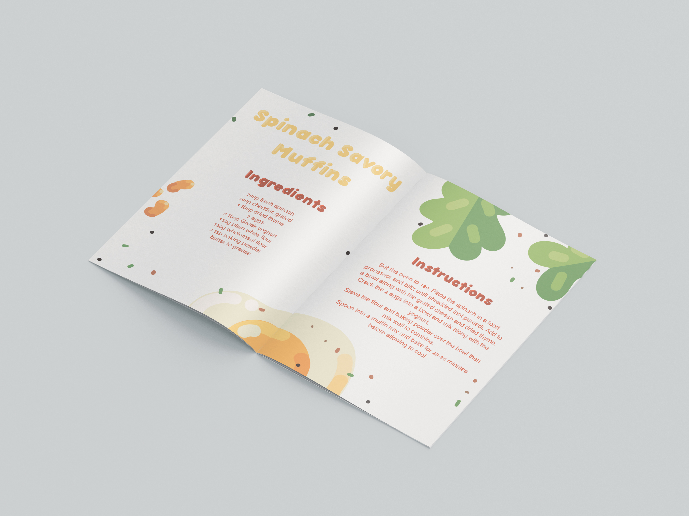
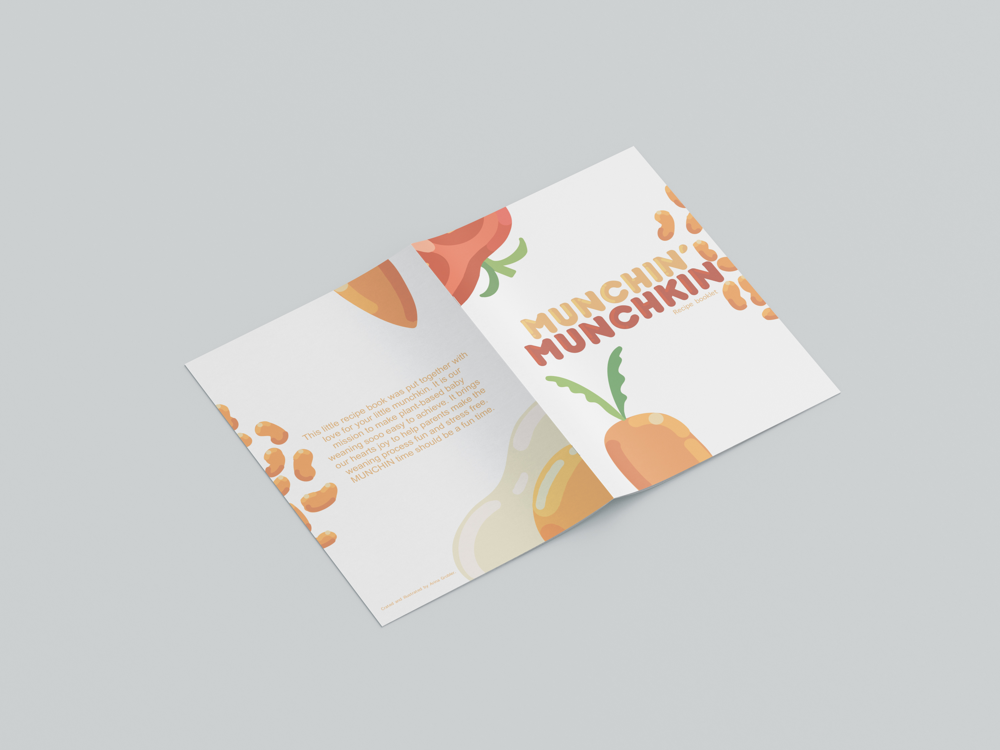
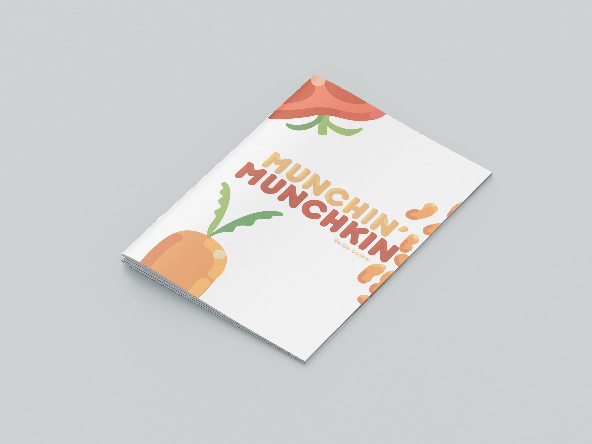

Project type:
Digital design, multimedia design, illustration
Date:
February 2023
Location:
Potchefstroom
This project supports the identified gap that parents with a plant-based diet might need help with how to start weaning their babies on this diet and they don’t have applicable recipes for them. When you start weaning your baby it is important to introduce solid food effectively and give them all the nutrients they need. The theme of the content will focus on healthy and natural growth with the help of balanced nutrition. The project will contain content centered around a YouTube channel that creates instructions and shows how to cook a plant-based diet specifically catered for weaning babies. Instagram ads were created to support the channel and to attract more viewers who would be interested in the topic. The visual content was chosen and executed to emulate the fun and playful nature of children so as to attract parents to the channel as well as entertain the children while the parents are cooking.